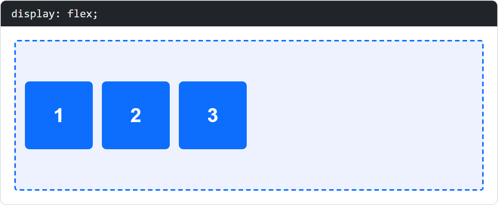
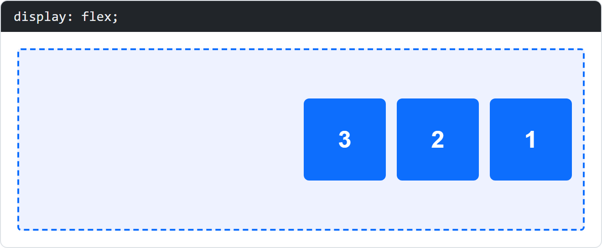
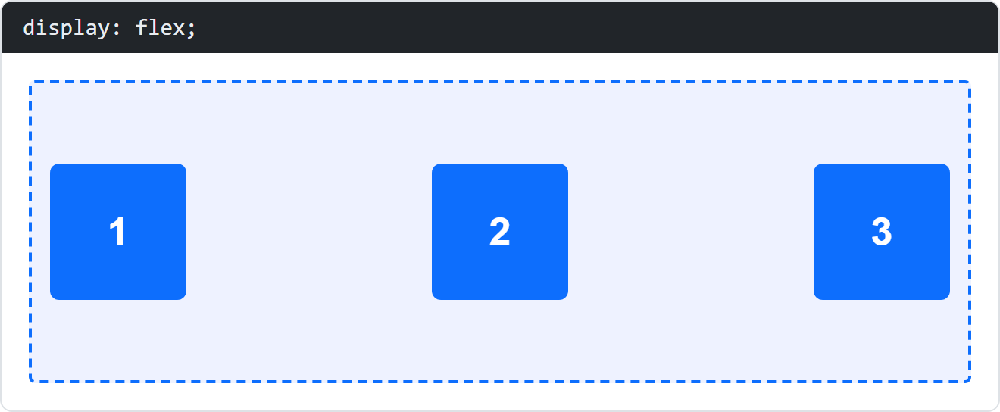
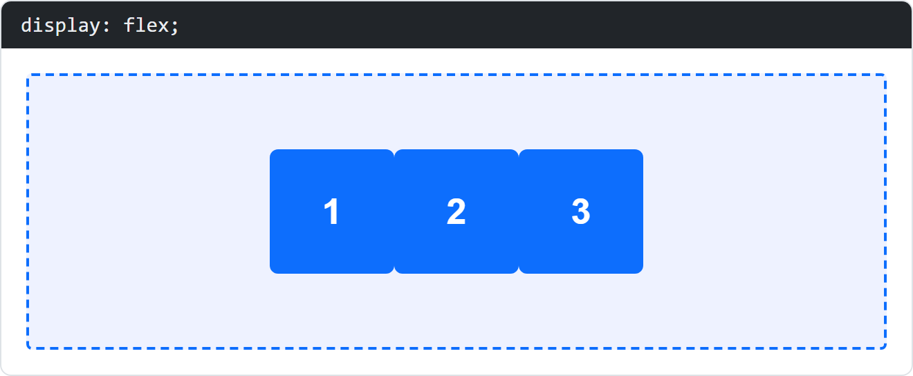
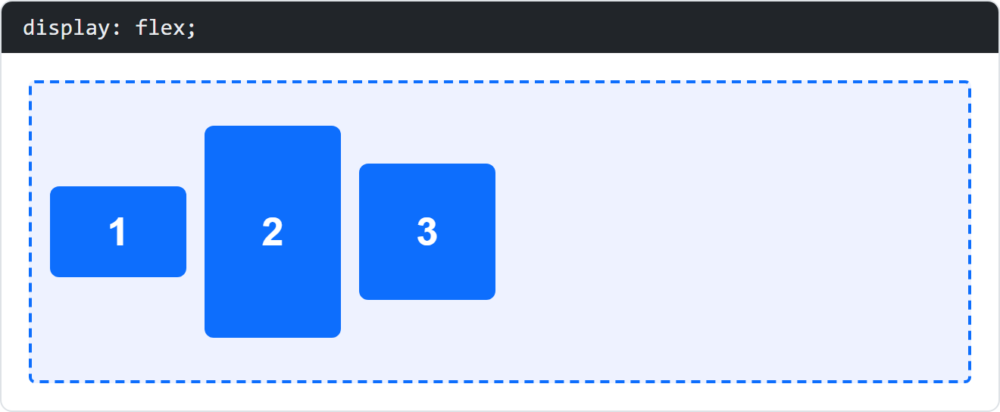
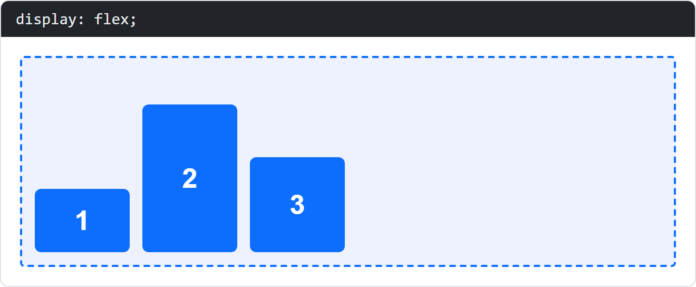
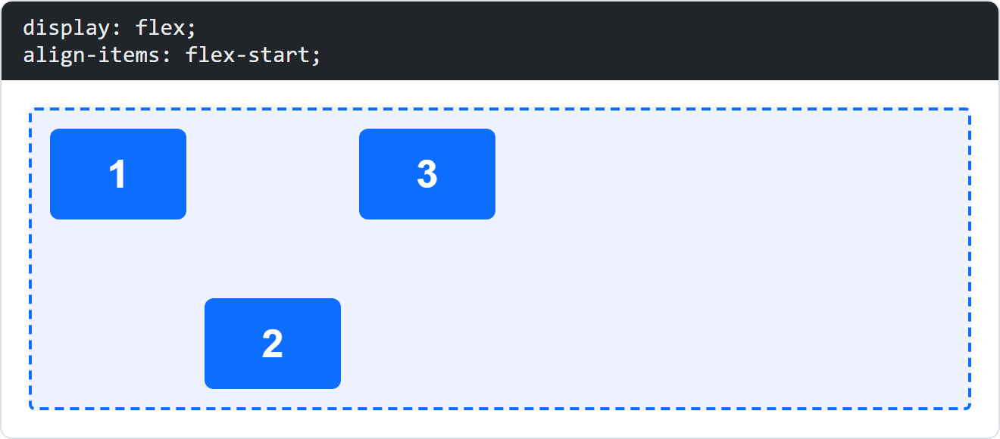
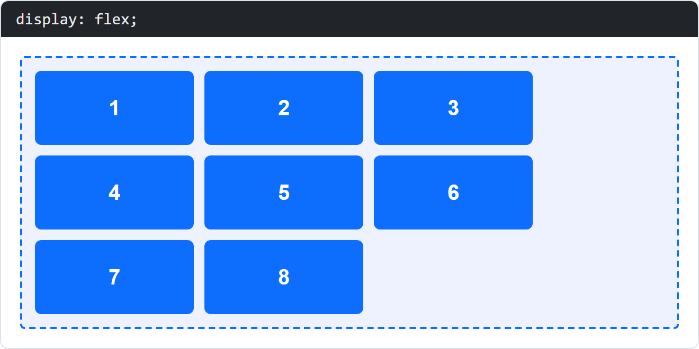
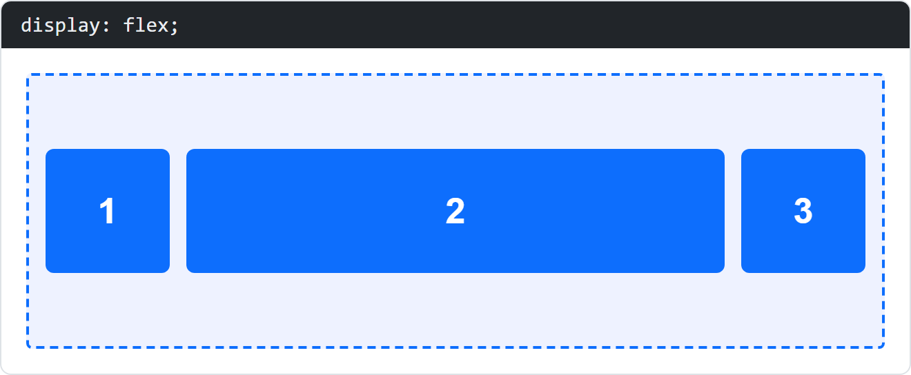
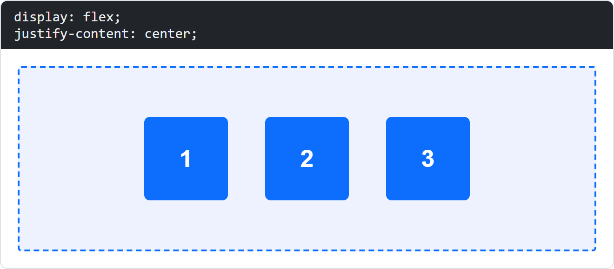

Quiz: CSS Flexbox
Each question shows a picture of a rendered HTML example (the dashed blue border is the flex container). Choose the flexbox declaration that produces the shown layout, then check your answers.
Question 1

The flex container (dashed border) has display: flex. The boxes labelled 1, 2 and 3 appear from left to right in this order. Which flex-direction value is used?
flex-direction: row is the default. It lays the items out in a row along the main axis, in the order of the source code (1, 2, 3 from left to right).
Question 2

The flex container has display: flex. The boxes labelled 1, 2 and 3 appear from left to right in the order 3, 2, 1. Which flex-direction value is used?
flex-direction: row-reverse keeps the items in a row, but starts the main axis at the right side, so the order is reversed.
Question 3

The flex container is much wider than its three items. The first item touches the left edge, the last item touches the right edge and the remaining space is distributed evenly between the items. Which justify-content value is used?
justify-content: space-between puts the first item at the start and the last item at the end of the main axis; the free space is distributed between the items.
Question 4

The three items of the flex container are grouped together in the middle of the container. Which justify-content value is used?
justify-content: center centres the whole group of items along the main axis.
Question 5

The three items have different heights (60px, 140px and 90px). They are all centred vertically inside the 200px high container. Which align-items value is used?
align-items: center aligns the items along the cross axis (here vertically) in the middle of the container.
Question 6

The three items have different heights and are all aligned at the bottom edge of the container. Which align-items value is used?
align-items: flex-end aligns the items at the end of the cross axis, which is the bottom edge for a row.
Question 7

All items are aligned at the top of the container, except the middle item (which is aligned at the bottom). Which declaration does the middle item have?
align-self overrides the container's align-items for a single item. align-self: flex-end moves only that item to the bottom.
Question 8

The eight items do not fit next to each other in one line, so the remaining items move onto a second line inside the container. Which declaration on the container causes this?
With flex-wrap: wrap the items that do not fit on the first line are moved onto the next line.
Question 9

Boxes 1 and 3 are 90px wide. Box 2 is much wider and fills the remaining space in the container. Which declaration does box 2 have?
flex-grow: 1 lets an item grow and take up the free space that is left in the container.
Question 10

The three items are grouped in the middle of the container and each item has a spacing of 40px to the next item. Which declaration creates this spacing between the items?
gap (or column-gap/row-gap) sets the distance between flex items without adding space around the outside of the container.